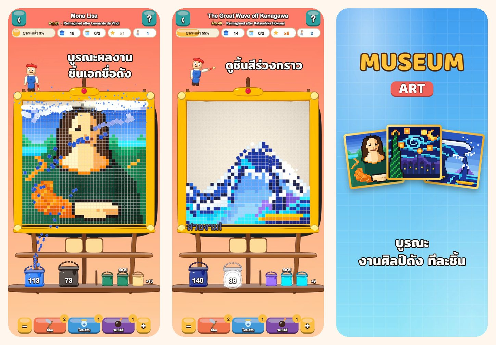

Museum Art
พัซเซิลสีภาพพิกเซล
แตะสีแล้วดูชิ้นสีร่วงกราว! บูรณะภาพพิกเซลอาร์ต 51 ภาพ ตั้งแต่โมนาลิซาไปจนถึงอิสตันบูล ปารีส โรม และนิวยอร์ก
ดาวน์โหลดบน App Store
เกี่ยวกับเกม
ทุกภาพใน Museum Art สร้างจากชิ้นสี่เหลี่ยมหลากสี เก็บทีละสี แล้วดูภาพกลับมาเปล่งประกายอีกครั้ง
วิธีเล่น
- แตะพื้นที่สีที่แตะแถวล่างสุด หรือแตะถังบนชั้น แล้วชิ้นสีจะบินเข้าถังของมัน
- ชิ้นด้านบนจะไหลลงมาเหมือนทราย และเปิดทางให้เล่นต่อ
- ยังไม่มีถังสำหรับสีนั้นใช่ไหม? พักไว้ในโหลบนถาดก่อนได้
- ยิ่งใช้ถาดน้อย ก็ยิ่งได้ดาวมาก
51 ภาพรอการบูรณะ
- เริ่มจากภาพสดใสที่เล่นง่าย: บอลลูน เรือใบ แมว และประภาคาร
- ธรรมชาติ: ยอดเขาหิมะ ทะเลสาบบนภูเขา ดอกซากุระ และทะเลทรายยามพลบค่ำ
- ทัวร์รอบโลกผ่านอิสตันบูล ปารีส โรม และนิวยอร์ก
- คลังสมบัติของปรมาจารย์: The Great Wave, The Starry Night, Water Lilies, The Milkmaid, Impression, Sunrise และโมนาลิซา ที่วาดใหม่เป็นภาพพิกเซล
เล่นสบาย และยุติธรรม
- ทุกด่านผ่านได้โดยไม่ต้องใช้ไอเท็มช่วย และเล่นใหม่ได้ฟรี
- ไอเท็มช่วยยามติดขัด: ค้อน โหลเสริม และระเบิดสี
- ซูมดูรายละเอียดได้ทุกเมื่อ
- ทุกภาพมีเกร็ดความรู้สนุก ๆ
- เล่นได้ 19 ภาษา